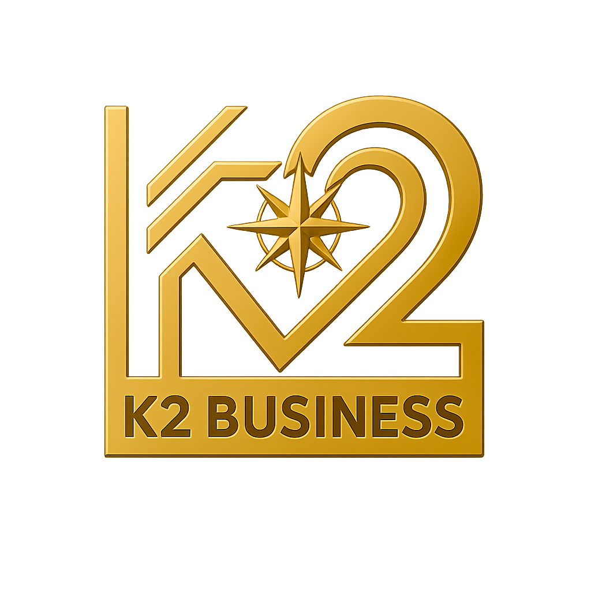

üìã Check-up Empresarial Profundo
Um diagnóstico
rápido
e
estratégico
para avaliar os
4 órgãos vitais da sua empresa:
ü߆ Lideran√ßa e Dire√ß√£o
❤️ Equipe, Clima e Cultura
üí® Finan√ßas e Sustenta√ß√£o
ü©∏ Processos, Comunica√ß√£o e Sistemas
Com apenas 52 perguntas, você obtém em poucos minutos um diagnóstico claro e prático sobre a saúde do seu negócio.
Dê o primeiro passo agora, sua empresa agradece!
Nome da Empresa:
WhatsApp:
Enviar Respostas